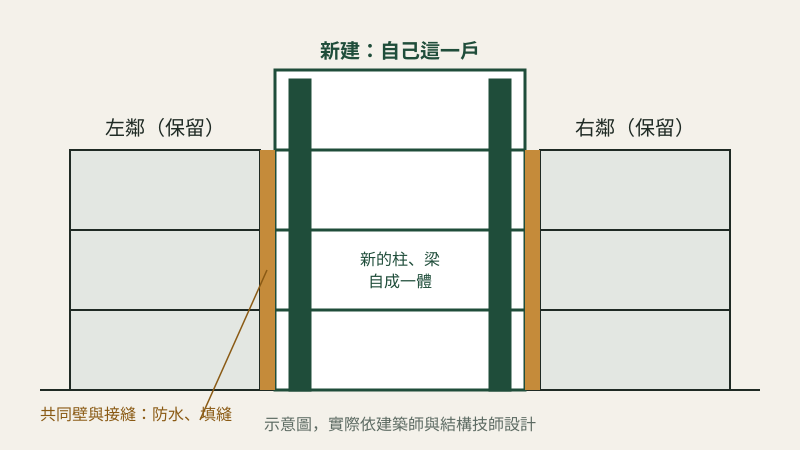

工程筆記
連棟老透天只拆自己這一戶，隔壁鄰居的房子怎麼保護？

台中很多老透天是一整排一起蓋的，左右兩戶共用一道牆。只拆自己這一戶，最常被問的就是：會不會把隔壁弄裂、弄漏水？
一句話回答：會不會出事，關鍵在開工前、拆除中、蓋新屋時這三段有沒有做對。
一、開工前：先把鄰居房子現在的樣子記下來
- 施工前我們會申請「鄰房現況鑑定」，由土木技師到鄰居家裡，把現有的裂縫、滲水、傾斜拍照記錄。
- 這份紀錄的用處是：日後如果鄰居說房子裂了，可以對照是原本就有，還是施工造成的，對雙方都公平。
- 開工前也會先去跟左右鄰居打招呼，說明施工期間、時段和聯絡方式。
二、拆除中：由上往下、一層一層慢慢拆
- 連棟老屋不能用大型怪手直接推倒，通常是由上往下逐層拆除，靠近共同壁的部分用小型機具或人工處理。
- 拆到共同壁時，依建築師與結構技師的設計，決定這道牆保留或怎麼處理，並同步做好防水收頭，避免下雨時水從牆縫滲到鄰居家。
- 拆除期間會搭設防護網、做好灑水降塵。
三、蓋新屋：新結構和鄰房分開
- 新房子的柱、梁、基礎依結構設計施作，與鄰房之間的接縫要另外做防水與填縫處理。
- 施工期間如果鄰居反映有狀況，我們會第一時間到現場看，對照開工前的鑑定紀錄處理。
我們遇過的實例
北屯一戶連棟老透天，只拆自己這一戶、保留和鄰居共用的那道牆，重建成 5 層樓透天。
實際做法依建築師、結構技師的設計與現場條件而定。